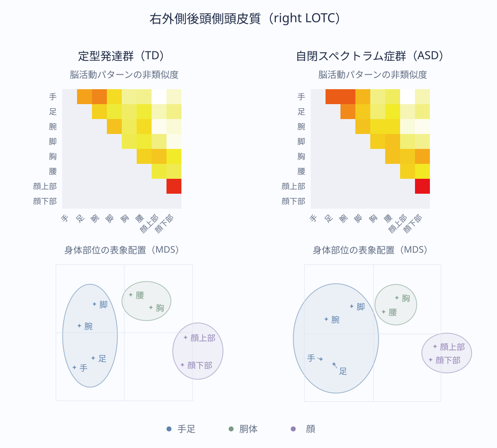

研究概要
自閉スペクトラム症における身体部位の視覚的表象
顔や手足といった身体部位を知覚することは、コミュニケーションを行う上で重要なことです。私たちは、身体部位の情報が脳内でどのように整理されているのかに着目し、成人の自閉スペクトラム症（ASD）者と定型発達（TD）者を比較しました（Kurihara et al., 2025, Imaging Neuroscience）。
手や足、胴体、顔の各部位の画像を見ているときの脳活動をfMRIで計測し、身体の視覚処理に関わる外側後頭側頭皮質（LOTC）を調べました。表象類似度分析（RSA）を用いて、どの身体部位が似た脳活動パターンで表されるのかを比較しました（図1）。

その結果、両群ともに、身体部位は「手足」「胴体」「顔」の3つのまとまりとして表され、左右のLOTCで類似した表象構造が見られました（図2）。今回調べた成人では、ASD者の身体部位に関する基本的な視覚的表象構造が、TD者と類似することを示しています。コミュニケーションの特徴を理解するうえで、見えた情報をどのように解釈し、他者との関わりに用いるのかを検討する手がかりになると考えています。
